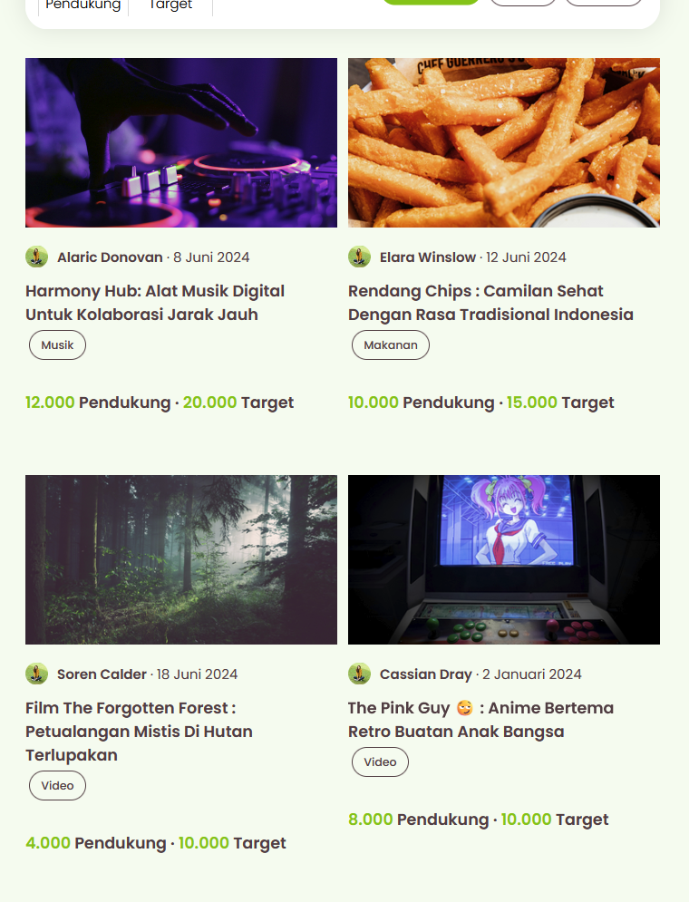
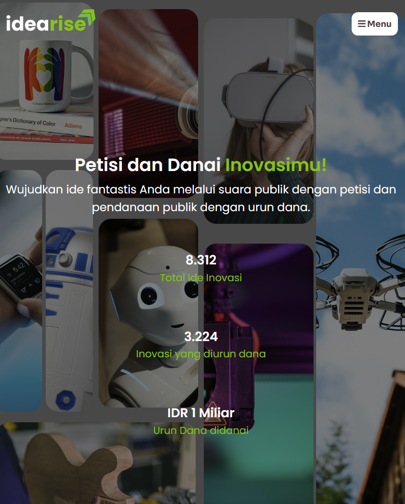
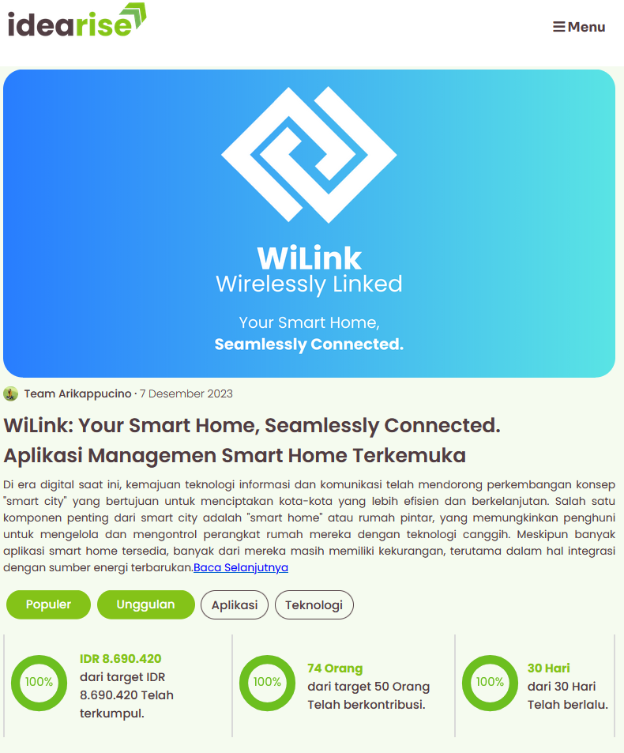

Menavigasikan Ide-ide Cemerlang Menjadi Inovasi yang Revolusioner Bagi Kehidupan Sehari-hari.
Visi kami adalah memberdayakan inovator mewujudkan ide mereka menjadi kenyataan. Kami menyediakan platform petisi untuk menguji minat pasar dan layanan urun dana sebagai sumber modal, menjembatani inovasi dengan implementasi nyata.
Tentang Kami
Idearise adalah sebuah website yang membantu inovator untuk mengembangkan ide-ide
inovatif mereka dengan mencari dukungan suara dan dana dari publik.
Fitur Petisi memungkinkan publik
untuk memberikan suara atau tanda tangan pada ide atau produk tertentu. Fitur ini bertujuan
untuk membantu inovator mengukur minat pasar dan permintaan terhadap produk mereka sebelum
melanjutkan ke tahap pengembangan atau peluncuran. Dengan adanya feedback langsung dari publik,
inovator dapat memperoleh wawasan berharga tentang potensi pasar dan memastikan bahwa ide mereka
memiliki daya tarik yang kuat sebelum menginvestasikan waktu dan sumber daya lebih lanjut.
Di sisi lain, fitur Urun Dana (Crowdfunding) memungkinkan inovator untuk mengumpulkan dana dari
publik. Platform ini memberikan akses ke sumber daya finansial yang diperlukan untuk mendukung
dan mempercepat pertumbuhan proyek-proyek inovatif. Dengan dukungan dana dari publik, inovator
dapat mengatasi masalah kekurangan dana dan melanjutkan pengembangan produk mereka, serta
mempercepat waktu ke pasar.
Dengan mengintegrasikan kedua fitur ini, Idearise bertujuan untuk memberikan dukungan yang
komprehensif kepada inovator, startup, dan UMKM. Platform ini tidak hanya membantu mereka
mendapatkan dana yang dibutuhkan tetapi juga memastikan bahwa produk atau inovasi mereka
memiliki potensi pasar yang kuat. Idearise berkomitmen untuk meningkatkan peluang kesuksesan di
pasar yang kompetitif, mendorong pertumbuhan inovasi, dan memperkuat ekosistem kewirausahaan di
Indonesia.
Tentang Nama dan Logo Kami
Nama Kami
Idearise berasal dari dua kata, yaitu "idea" dan "rise". "Ide" berarti gagasan, sedangkan "rise" berarti bangkit. Jadi, nama kami memiliki makna membangkitkan ide-ide yang dapat memunculkan inovasi-inovasi baru yang akan membantu perkembangan dunia.
Logo Kami
Logo Idearise menampilkan teks dengan warna coklat pada "idea" dan hijau pada "rise", dilengkapi tanda panah ke atas yang melambangkan peningkatan ide menjadi inovasi. Tagline "Petisi & Danai Inovasimu" menegaskan komitmen kami dalam mendukung dan mendanai ide-ide inovator. Desain ini mencerminkan tujuan Idearise yang menginspirasi dan memberdayakan.
Tentang Konsep Desain Kami
Simplicity
Visually Appealing
Easy to Navigate
Color Pallete yang Simpel & Atraktif.
Jelajahi Idearise dengan Kombinasi Warna Terbaik.